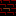
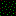
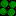
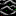
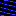
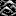
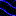

What is this?
This application demonstrates different pathfinding methods on a simple map that contains a small number of terrain elements. The map above is a grid of terrain elements. The table below shows what each of the terrain elements are. Each terrain element has a movement cost. The idea is to find the lowest-cost path from a start location to a goal location.
Quick Start
A* search is the fastest map search here; click the "A* search" link to perform the search on the map. Try different maps by clicking one of the "render preset map" links on the left, or by generating random maps by clicking one of the "render a random map" links. Clicking on the map will relocate the start location (represented by a picture of a person). Click the "Clicking grid square relocates start" link to change modes. This will let you relocate the goal location (the castle icon) by clicking on the map. This application works best in Firefox and Safari. It also works in Internet Explorer but is a bit slower (the searches are still fast, but the rendering time is slower for some reason).
More information
To begin, render a map. A sample preset map is already shown when you load this page. This map is shown if you click the "render preset map 1" link. The corresponding map data file appears in the "Map data" textbox. You can supply your own custom maps in this textbox. Simply type or paste the data into the box and click the "render the above map data" link. You can also generate random maps of different sizes with the various "render a random map" buttons. Clicking one of these will run a fractal terrain generation scheme to produce a randomized map. You can "smooth" out the maps by selecting smaller values from the "height map scaling" pulldown list before clicking the "render a random map" links. Likewise, larger scaling values will produce rougher-looking maps. Note that random maps sizes larger than 100 or so may take slightly longer to run searches on. For example, searching the largest map possible (255x255) takes about 20 to 30 seconds on my machine.
Once you see the map you want, you can click "Toggle start" to hide or show a person icon indicating the starting location on the map. Click "Toggle goal" to hide or show a castle icon indicating the goal location on the map. Click "Breadth-first search" to perform a breadth-first search (BFS), which will find the shortest path between the start and the goal. In general, this path will not have the lowest cost. Click "Depth-first search (stop on first goal)" to perform a depth-first search (DFS), which will return the first deepest path found between the start and the goal. This path is certainly of neither low cost nor minimum length. Neither BFS nor DFS are good searches, because they do not consider the path cost. Uniform-cost and A* search, however, both find the best path costs. A* is associated with a heuristic, which affects its searching strategy. The best heuristic here for A* is the Manhattan distance; use the pulldown list to try out different heuristics.
When a search is complete, the result is shown as a white path on the map. White dots indicate grid squares that were visited by the algorithm. Additional numerical results collected during the search are also displayed. If the search finds no path to the goal, however, an alert will appear.
| Icon | Map data symbol | Terrain type | Movement cost |
|---|---|---|---|
|  | R | road | 1 |
|  | f | field | 2 |
|  | F | forest | 4 |
|  | h | hills | 5 |
|  | r | river | 7 |
|  | M | mountains | 10 |
|  | W | water | Can't be entered |